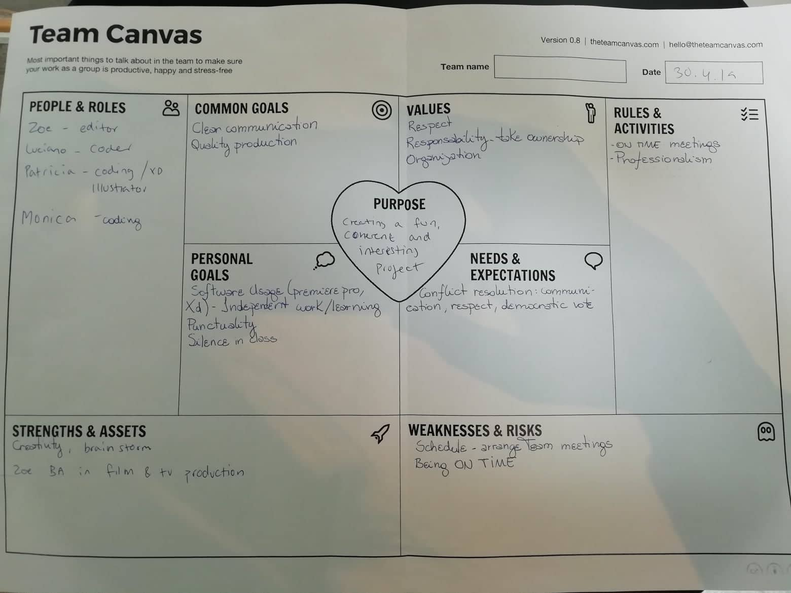
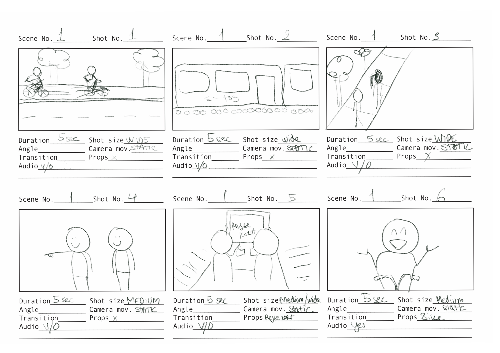
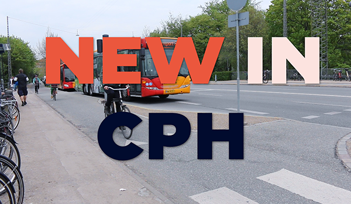
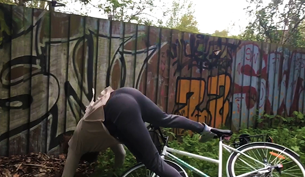
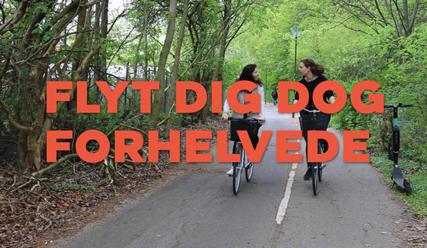

03.02.01 Team Canvas, 03.02.03 Storyboard, 03.02.04 XD Prototype and 03.02.05 Link to site
What was the project?
In this project we had to create a website with an instructional video about bicycles.
What did I learn?
I helped create the XD prototype for the website. I was also mainly in charge of filming and editing the instructional video.
I got hands-on experience with Premiere Pro and XD. I hadn't done much color grading before and it was good to try that out. Prototyping in XD was great as it helped me later on in the sprint projects.
My group was very scattered and for the first 3 days I was the only one present. For this reason the Team Canvas wasn't particularly useful as we were well into the project by the time everyone was present to participate. I ended up taking on the role as project manager and in the end it was a valuable group work experience.
What would I change today?
Overall I thought we came up with a nice idea and site. As you can see on the site the font wasn't implemented, so in the next iteration I would make sure to fix this
We received some good feedback regarding the film, and there are a few tweaks I would changed based on this. For example, the audio levels aren't quite right.
We did quite a few user tests, and based on this I can conclude that our target group was pretty accurate as the younger users found the video a lot funnier than the slightly older users. However, this could also be due to the fact that we did user tests in class and the users obviously knew the actors in the film.
If we had the time I would have spent longer on the storyboard as well. I don't think it clearly communicates each step of the film.
    